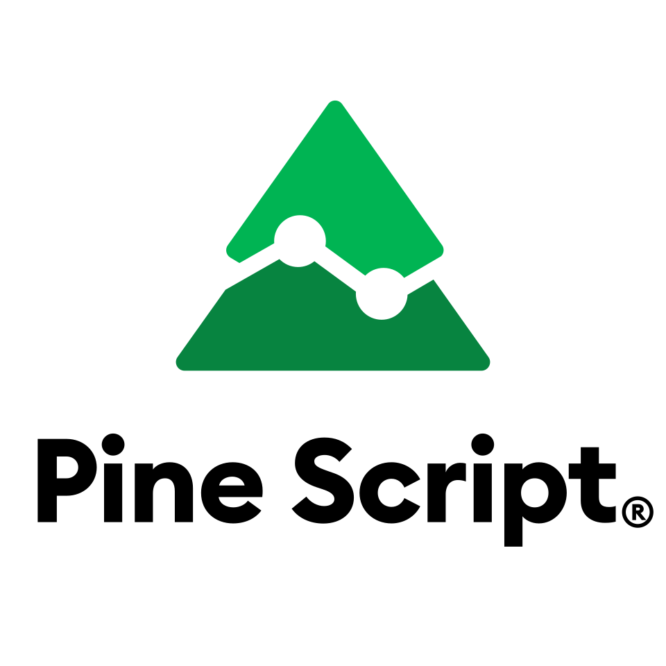

Welcome to Pine Script® v5¶
{kind=link}
Pine Script® is TradingView’s programming language. It allows traders to create their own trading tools and run them on our servers. We designed Pine Script® as a lightweight, yet powerful, language for developing indicators and strategies that you can then backtest. Most of TradingView’s built-in indicators are written in Pine Script®, and our thriving community of Pine Script® programmers has published more than 100,000 Community Scripts.
It’s our explicit goal to keep Pine Script® accessible and easy to understand for the broadest possible audience. Pine Script® is cloud-based and therefore different from client-side programming languages. While we likely won’t develop Pine Script® into a full-fledged language, we do constantly improve it and are always happy to consider requests for new features.
Because each script uses computational resources in the cloud, we must impose limits in order to share these resources fairly among our users. We strive to set as few limits as possible, but will of course have to implement as many as needed for the platform to run smoothly. Limitations apply to the amount of data requested from additional symbols, execution time, memory usage and script size.